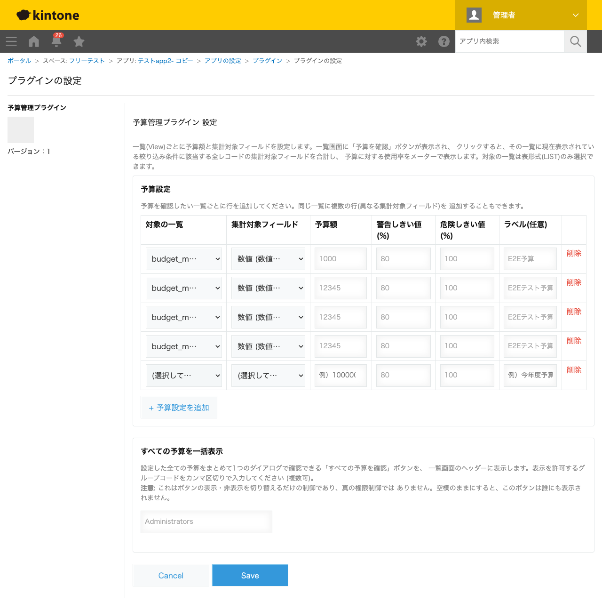

GovAppsプラグイン 安全性を確認できる無料kintoneプラグイン集
アプリの「一覧(View)」ごとに予算額と集計対象フィールド(数値)を設定できるプラグインです。予算を設定した一覧を開くと 一覧画面のヘッダーに「予算を確認」ボタンが表示され、押すと今まさにその一覧に表示されている絞り込み条件 (一覧に保存された条件に加え、画面上で追加・変更した絞り込みも含む)に該当する全レコードの集計対象フィールドを合計し、 予算に対する使用率をメーター(進捗バー)で表示します。警告・危険しきい値(%、行ごとに設定可能)を境にメーターの色が 緑→黄→赤に変わり、色だけに頼らずパーセンテージの数値も必ず併記します。同じ一覧に複数の予算(例: 費目ごと)を 割り当てることもできます。これとは別に、許可されたグループ(ロール)に所属するユーザーにだけ「すべての予算を確認」 ボタンを表示でき、押すと設定されている全ての予算を、それぞれの一覧に保存された絞り込み条件で横断集計し、 1つのダイアログにまとめて表示します(部署ごと・プロジェクトごとの予算を経営層がまとめて確認する、といった用途)。 予算の集計・アプリの一覧設定の取得はいずれも自アプリに対するkintone REST APIの呼び出しに限られ、外部サーバーへの 通信は一切行いません。
部署ごとに絞り込んだ一覧(View)を作成し、それぞれに予算額と集計対象フィールド(経費金額)を設定します。一覧画面の「予算を確認」ボタンを押すだけで、その部署の現在の絞り込み条件(今月分・特定の費目のみ、など画面上で追加した絞り込みも含む)に該当する経費の合計と予算消化率がメーターで表示されます。
案件別の一覧に、工数(数値フィールド)の合計に対する上限時間を予算として設定します。警告しきい値(例: 80%)を超えるとメーターが黄色に、危険しきい値(例: 100%)を超えると赤色に変わるため、予算超過に至る前に気づけます。
管理職やグループ(ロール)を許可グループとして設定しておくと、一覧画面に「すべての予算を確認」ボタンが表示されます。押すと、設定されている全ての予算をそれぞれの一覧に保存された絞り込み条件で横断集計し、1つのダイアログにまとめて表示するため、各一覧を個別に開かずに全体の状況を把握できます。
対象の一覧は表形式(LIST)のみです。カレンダー形式・カスタマイズ形式の一覧は選択肢に出ません。集計対象フィールドの合計(SUM)のみに対応しており、件数・平均は対象外です。
kintoneセキュアコーディングガイドラインに沿って実装時にチェックしています。特に重要な点は次のとおりです。
document.createElement() + textContentのみで組み立てており、innerHTMLへ動的な値を差し込む箇所はありません。kintone.api()(kintone自身への呼び出し専用の内部ラッパー)経由です。生のfetch/XMLHttpRequestは使用していません。設定画面は動作テスト環境の一覧設定(preview、アプリ管理権限が必要)を、「すべての予算を確認」ボタンは運用環境の一覧設定(一般利用者のレコード閲覧権限で足りる)を、それぞれ用途に応じて正しく使い分けています。kintone.user.getGroups()による表示切り替え)は、クライアント側の表示ゲートに過ぎず真の権限制御ではないことを明記し、許可グループコードが未設定の場合は誰にも表示しない安全側の既定値にしています。詳細な確認項目・確認日は下記GitHubのチェックリストに全項目を掲載しています。

「予算を確認」「すべての予算を確認」ボタンを押すたびに、対象レコードを$id昇順で500件ずつページングしながら取得するため、対象レコード数が多いほどAPI実行回数が増えます(500件ごとに1回)。「すべての予算を確認」ボタンはさらに、運用環境の一覧設定を取得するAPIを1回追加で実行します。設定画面での保存・読み込み自体はkintoneのプラグイン設定機能を使うため、追加のAPI実行はありません。